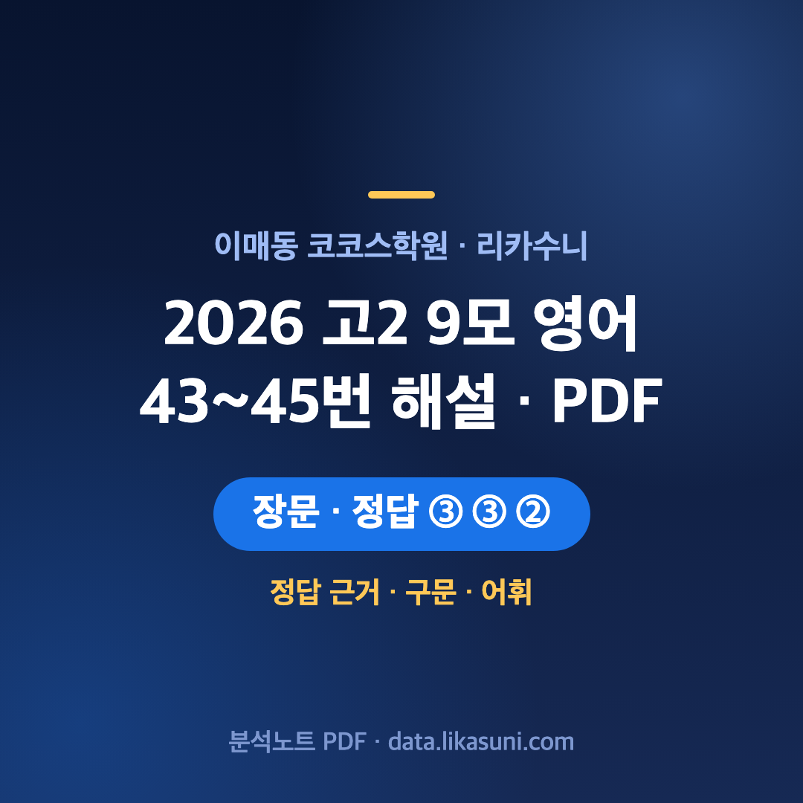
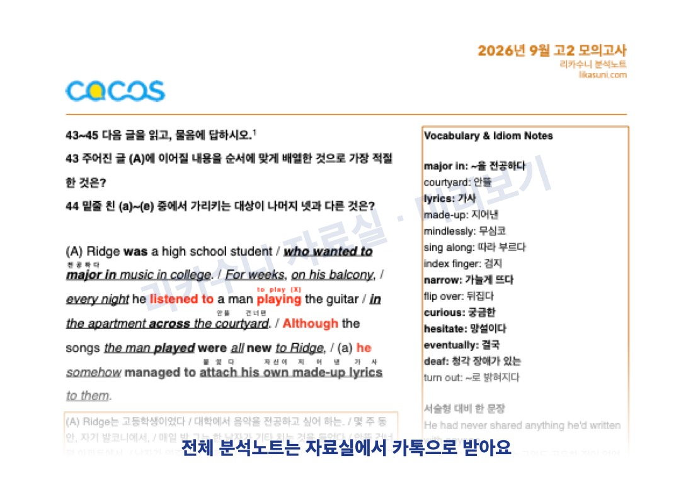

리카수니 분석노트 해설 · 이매동 코코스학원
2026 고2 9모 영어 43~45번 장문 해설·분석이에요. (2026 9월 고2 영어 모의고사 43~45번 · 장문 순서·지칭·내용 일치 · 정답 43번 ③ (C)-(D)-(B), 44번 ③ (c), 45번 ②)
순서 근거, 지칭 구별법, 내용 일치 확인, 구문(지각동사 + O + -ing · as if + to부정사 · It turned out), 어휘를 정리했고 분석노트 pdf 받는 곳은 글 아래에 있어요.
안녕하세요, 이매동 코코스학원 리카수니 원장입니다.
학생 요청으로 만든 분석노트를 바탕으로 정리했어요. 시험지를 옆에 펴 놓고 보시면 더 잘 보여요.
| 한눈에 보는 정답 · 시험: 2026년 9월 고2 전국연합학력평가 영어 · 번호: 43~45번 (장문 세트) · 43번 글의 순서: ③ (C) - (D) - (B) · 44번 가리키는 대상이 다른 것: ③ (c) (남자, 나머지는 Ridge) · 45번 내용과 일치하지 않는 것: ② (Ridge는 자신이 쓴 가사를 남에게 자주 보여 주었다 → 한 번도 공유한 적 없음) |
음악을 전공하고 싶은 고등학생 Ridge가 안뜰 건너편 이웃의 기타 연주에 자기 가사를 붙여 부르다가, 문자로 연락을 주고받고 가사를 보내게 되는 이야기예요. 알고 보니 그 이웃은 청각 장애가 있는 기타리스트이자 작곡가였고, Ridge의 가사를 새 앨범에 쓰고 싶어 했어요.
| · (A) 끝: Ridge가 남자의 기타 리듬을 무심코 따라가기 시작 → (C) 노래하는 중에 남자가 연주를 멈춤, 종이에 '문자 보내'를 들어 올리고 '질문이 있어'라고 씀 · (C) 끝 '질문이 있어' → (D) Ridge가 문자로 '질문이 뭐예요?', 남자는 '가사를 보내 줄래?' · (D) 끝 '보내 줄래?' → (B) 망설이다 결국 가사를 보냄, 며칠 뒤 새 앨범에 쓰고 싶다는 메시지 → (C) - (D) - (B), 정답 ③이에요. |
· (a) 자기 가사를 붙인 사람 = Ridge
· (b) 가사를 적어 보낸 사람 = Ridge
· (c) 종이를 뒤집어 '질문이 있어'라고 쓴 사람 = 남자(기타 연주자)
· (d) '질문이 뭐예요?'라고 입력한 사람 = Ridge
· (e) 남자가 자신을 볼 수 있다고 생각 못 한 사람 = Ridge
→ (c)만 남자, 정답 ③이에요. 대화가 오가는 장면에서는 '누가 쓰고, 누가 입력했는지' 동작의 주인을 확인하세요.
· ① 엄마에게 숙제하러 발코니에 나간다고 말함 → 일치
· ② 자신이 쓴 가사를 자주 보여 줌 → (B) he had never shared anything he'd written with anyone. 불일치, 정답
· ③ 남자는 가사를 새 앨범에 쓰고 싶어 함 → 일치
· ④ 남자는 종이 한 장을 들어 올림 → 일치
· ⑤ 왜 전화 대신 문자를 요청했는지 궁금해함 → 일치 (남자가 청각 장애가 있어서라는 반전과 연결돼요)

▲ 2026 고2 9모 영어 43~45번 장문 해설·분석 pdf 분석노트 미리보기
| 1) 지각동사 listen to / see / notice + 목적어 + -ing (to play 는 틀려요) → every night he listened to a man playing the guitar in the apartment across the courtyard (2026년 9월 고2 43~45번) 2) 양보 although / manage to (어떻게든 ~해내다) 3) as if + to부정사 (마치 ~하려는 듯이): held up his index finger as if to say, "Hold on." 4) 관계대명사 what / 과거완료 had never stopped · had never shared 5) 형용사·분사구문 Curious about ~, and wondering why ~ / instead of a call / 간접의문문 how you're singing 6) It turned out (that) he was ~ (알고 보니 그는 ~였다) / after + 동명사 |
| 영어 | 뜻 |
|---|---|
| major in | ~을 전공하다 |
| courtyard | 안뜰 |
| lyrics | 가사 |
| made-up | 지어낸 |
| mindlessly | 무심코 |
| sing along (to) | (~에 맞춰) 따라 부르다 |
| look in one's direction ~ | 쪽을 바라보다 |
| index finger | 검지 |
| narrow | (눈을) 가늘게 뜨다 |
| flip over | 뒤집다 |
| curious | 궁금한 |
| hesitate | 망설이다 |
| eventually | 결국 |
| turn out | ~로 밝혀지다 |
| deaf | 청각 장애가 있는 |
| 서술형 대비 분석노트에 '서술형 대비 한 문장'(He had never shared anything he'd written with anyone. 그는 자신이 쓴 것을 누구와도 공유한 적이 없었다)과 영어 핵심 요약(Core Summary)을 해석과 함께 정리해 두었어요. as if + to부정사, type·enter 의 쓰임도 넣었어요. |
| 📂 2026 고2 9모 영어 43~45번 분석노트 pdf 받는 법 끊어 읽기·해석·순서 근거·구문·어휘가 정리된 PDF 는 리카수니 자료실에서 카카오 로그인 후 카톡으로 받을 수 있어요. 다른 번호도 요청할 수 있고, 회차 자료와 전과목 문제지·정답 pdf 는 같은 페이지 위쪽 회차 메뉴에서 볼 수 있어요. ▶ 2026 고2 9모 영어 분석노트 pdf (리카수니 자료실) https://data.likasuni.com/moe/go2/2026-09/eng/ |
이상 2026 고2 9모 영어 43~45번 장문 해설·분석 pdf 정리였어요. 궁금한 점은 댓글로 남겨 주세요.
| 🏫 이매동 코코스학원 안내 분당 이매동 코코스학원은 초등·중등·고등 영어와 수학을 가르쳐요. 모의고사·수능특강·내신 대비가 궁금하시면 편하게 문의해 주세요. · 홈페이지: https://www.cocosedu.co.kr/ · 주소: 경기 성남시 분당구 판교로 476 2층 |
#2026고29모영어 #2026고29모영어분석 #고29모영어 #고29모43번 #고29모43번45번 #2026년9월모의고사 #2026년9월고2영어 #9모영어장문 #장문독해 #글의순서 #지칭추론 #ItturnedoutRidge #영어분석노트 #이매동영어학원 #코코스학원 #리카수니